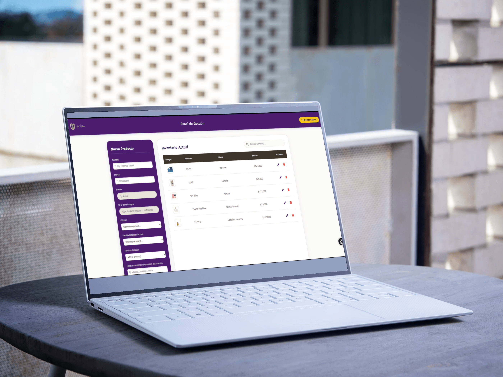

Annais Romero Díaz
Ingeniera en Informática
Me especializo en construir aplicaciones web dinámicas y asegurar que el software funcione con la máxima calidad y eficiencia.
Descargar CVSobre Mí
Soy Ingeniera en Informática titulada de DUOC UC, apasionada por el desarrollo de sistemas web y el aseguramiento de calidad (QA).
Tengo experiencia validando y desarrollando aplicaciones frontend utilizando JavaScript y Angular, complementándolo con un fuerte enfoque en pruebas funcionales, automatización con Selenium, y control de código con SonarQube.
Me considero una profesional analítica, extremadamente detallista y orientada a resolver problemas complejos en equipo mediante metodologías ágiles como Scrum y Kanban.
Ubicación
Puente Alto, Chile
Idiomas
Español (Nativo)
Inglés (Intermedio)
Certificaciones
- • Scrum Master
- • Product Owner Essentials
- • DevOps Essentials
Habilidades Técnicas
Desarrollo Frontend
- JavaScript
- Angular
- HTML5 & CSS3
- Bootstrap / Ionic
- SQL / MySQL
- Git / GitHub
QA & Software Testing
- Pruebas Funcionales y Regresión
- Automatización (Selenium)
- Pruebas de Carga (JMeter)
- Calidad de Código (SonarQube)
- Diseño de Test Cases
Mis Proyectos

Lily Perfumes - Panel de Gestión
- Sistema administrativo CRUD para la gestión de productos, inventario y control de stock de perfumes. Cuenta con login de acceso privado y base de datos en tiempo real.
- Tecnología: HTML, CSS Grid, JavaScript, Firebase
Contacto
¿Te interesa mi perfil híbrido para potenciar tu equipo de desarrollo o QA? ¡Hablemos!